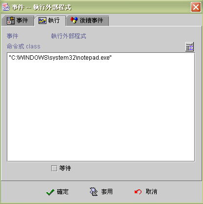

|

執行外部程式 (execute external command)
事件執行狀態與訊息 (event runtime status and message)
此事件可供設計師呼叫使用微軟視窗作業系統下的
.exe、.dll，或是客製的 java class。
需注意的是 .exe、.dll
指的是客戶端 (client) 的外部程式，客製的 .class
檔則需放在應用程式 \class\ 資料夾裡面。

客製
Java class (Customer Java™ class)
Java
程式設計師可以自行撰寫 Java 程式與 jLIVE™ 一起運作，jLIVE™
以執行外部程式事件 (execute external program event)
載入並實體化 class (load class)。
撰寫
Java 程式須引用 jLIVE™
執行期程式庫 jlive.jar：import com.probe.jlive.*;
以及客製ava 程式所需的 third-party.jar
檔 ，並且實作 (implements)
zJlivePaneImp 介面(interface)。執行時
jLIVE™ 載入並實體化 class 後會呼叫 public boolean
Process(zPanel aPANEL, String aEVENTNAME); 並傳入啟動執行此 Java class
的視窗模組 (zPanel) 及事件名稱。
由於 jLIVE™
AppClassLoader 並沒有提供 class constructor 的參數引入(paramenter)，所以客製
Java™ class 時其建構子 (constructor) 不可含有參數。jLIVE™
與客製 Java™ class 的參數溝通係經由 jLIVE™ 運算式的 Hash 與 Stack，以使傳輸的資料運作一致。客製
Java™ class 可以透過存取 Hash、LocalHash 與 Stack 與 jLIVE™
程式溝通。
-
jLIVE™
運算式的 Hash ：aPANEL.ClientManager.DataHolder.hHash。
-
jLIVE™
運算式的 SysHash ：aPANEL.ClientManager.DataHolder.hSysHash。
-
jLIVE™
運算式的 LocalHash ：aPANEL.hLocalHash。
-
jLIVE™
運算式的 Stack ：aPANEL.ClientManager.DataHolder.sStack。
範例
(example)
由
jLIVE™ 呼叫客製 class (CmsFunction.java)，傳入一字串，在
CmsFunction class 中引用 third-party.jar
檔 (org.cdpc.cms.CmsUtils) 將字串編碼
(encryption) 後傳回。
連結
(link) 以下事件並由按鈕啟動：
-
新增執行運算式事件：傳入參數
HashPut("usr_method",
"encrypt") and HashPut("usr_method_ok", "0")
and HashPut("passwd", "My Password")
-
新增執行外部程式事件：呼叫
class
"CmsFunction.class"
-
新增顯示訊息盒事件：傳回並顯示結果
Condition( (HashGet("usr_method_ok") = 1)
, "Encryption : "$HashGet("passwd"), "Call
CmsFunction Fail" )
CmsFunction.java
程式碼
import com.probe.jlive.*; // jLIVE
jar
import org.cdpc.cms.*; // third-party jar
import java.io.*;
import java.util.*;
public class CmsFunction implements zJlivePaneImp{
public CmsFunction() {} // constructor
public boolean Process(zPanel aPANEL, String aEVENTNAME) {
// retrival parameters
String umethod =
(String) aPANEL.ClientManager.DataHolder.hHash.get("usr_method");
String passwd =
(String) aPANEL.ClientManager.DataHolder.hHash.get("passwd");
if(umethod !=null && umethod.equals("encrypt")) {
// third-party class for encryption
passwd = org.cdpc.cms.CmsUtils.getShaHash(passwd);
// mark encrption ok
aPANEL.ClientManager.DataHolder.hHash.put("usr_method_ok", "1");
}
else // mark failure
aPANEL.ClientManager.DataHolder.hHashput("usr_method_okt", "0");
// return encryption
data
aPANEL.ClientManager.DataHolder.hHash.put("passwd", (passwd == null) ? "" :
passwd);
return true;
}
}
|
程式佈建
-
設計期
(design time)
CmsFunction.class 置放於應用程式
class 目錄下 (與 jLIVE 視窗 class 同一位置) 。
third-party.jar 置放於 jre/lib/ext
目錄下或於系統變數 ClassPath 加入
third-party.jar 檔。
jre/lib/ext 實際所在位置可以在
jLIVE Builder 主面版[系統屬性] 選單項目中，查看 java.ext.dirs。
-
執行期
(runtime)
將 CMsFucntion.class 與 third-party.jar
置放於應用程式 class 目錄下 (與 jLIVE 視窗 class
同一位置) 。
製作應用程式時，將 third-party.jar
填入 客製 jar 檔 中。
▲Top
事件執行狀態與訊息 (event runtime status and message)
EvStatus("事件名稱") ：取得事件執行狀態。
|
回傳值 |
狀態 |
| 空字串 |
事件未被引發。 |
| -1 |
事件啟動後，依條件判斷後執行否則事件。 |
| 1 |
事件啟動後，執行成功。 |
| 0 |
事件啟動後，執行過程有誤。 |
EvStatus("事件名稱.error") ：取得事件執行錯誤代碼。
|
回傳值 |
說明 |
| 空字串 或 0 |
沒有錯誤訊息或無法取得錯誤訊息。 |
| 1 |
外部程式名稱錯誤或無法找到程式模組 (class not found)。 |
| 2 |
執行外部程式錯誤。 |
EvStatus("事件名稱.INFO_STRING") ：取得事件執行
INFO_STRING 的訊息。
|
INFO_STRING |
回傳值 |
說明 |
| name |
外部程式名稱 |
外部程式名稱。 |
▲Top
Copyright © 2001~
2004 Probe Technology Inc. . All Rights Reserved.
Questions, comments,
and suggestions to Service@probe.com.tw
|